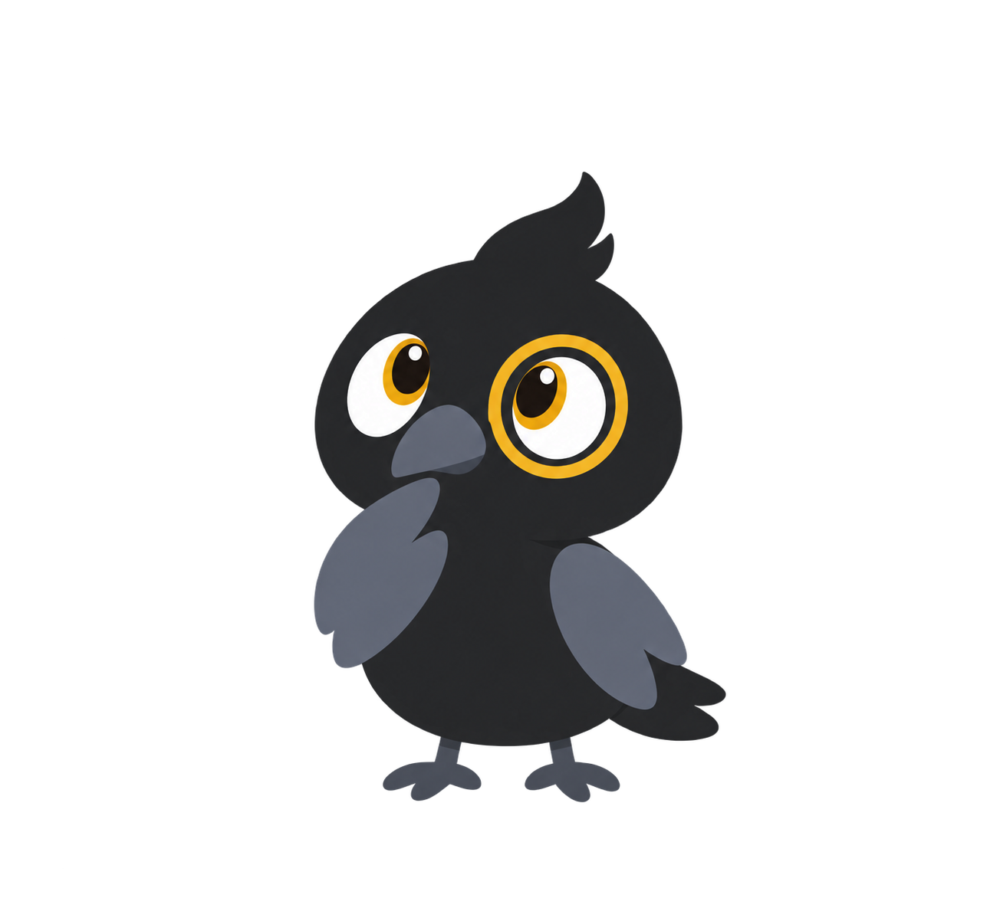

METAFİZİK · 01 / 05Görünenin
Görünenin
ötesinde.
Ne vardır? Varlığı nasıl düşünürüz? Aynı soruya açılan dört farklı kapı.
Aristoteles: Bir şeyi o şey yapan nedir? Töz, değişim ve olanak üzerine düşün.
Çerçeveleri seç. Akan ışık ortak soruyu temsil eder; doğrudan bir etki zinciri değildir.
ÜÇ SORU · 02 / 05Ne vardır,
Ne vardır,
nasıl vardır?
Kartları aç; bir kavramı bir soruya dönüştür.
DÜŞÜNCE DENEYİ · 03 / 05Dünya mı,
Dünya mı,
bakışımız mı?
Bir nesneyi düşündüğünde hangisini öne çıkarırsın?
Bir bakış seç. Bu bir düşünme deneyi; doğru cevabı ölçen bir test değil.
varlık
DUR VE DÜŞÜN · 04 / 05Değişirken
Değişirken
aynı kalmak.
Bir ağacın dalları, yaprakları ve biçimi değişir. Onun hâlâ aynı ağaç olduğunu söylerken neyi koruyoruz?
Maddeyi mi, biçimi mi, geçmişini mi?

AÇIK UÇ · 05 / 05Bir cevap değil,
Bir cevap değil,
dört başlangıç.
Aristoteles ile tözü, Descartes ile zihin ve maddeyi, Kant ile bilginin sınırlarını, Hegel ile kavramın gelişimini düşün.
Senin için hangi soru açık kaldı?
Kısa kavramsal özetlerdir; filozoflardan doğrudan alıntı değildir.